来源：https://b121w2zgwyx.feishu.cn/docx/HDE0dSuocoXWPQxGyESc1YKon8b
之前分享了一个工具 ，广受大伙好评。但是在大家使用过程中的问题反馈看来。发现目前最主要有以下2个问题。
1、对于不熟悉软件行业的人来说，搭建和调试RPA还是有点困难。
2、RPA对于不同的环境，稳定性有点不好保证。比如，假如豆包网站更新了，或者其他使用的软件更新了，我们就有可能需要同时更新操作元素，才能使用。
是否有更加简便和减少上手复杂度的方式呢？
为了解决这个问题，我又琢磨着把我的流程升级了一下，之前有看到微信公众号有提供Api可以直接发布公众号的。我在扣子上也有看到相关的插件，但是，还是那句话，对于软件行业不熟悉的人自己搭起来，还是需要花点时间的。
所以，我最新研究了一个工作流方案， 就是，只要能用插件或者工作流实现的，功能全部转移到工作流，RPA只解决实在解决不了的部分。这样可以尽量确保大家搭建跑通的成功率。甚至一步到位！
目前，我的工作流对于公众号来说，已经可以实现，文章一键生成+自动配图+批量多账号发布；
接下来，先来展示一下这个工作流。
并不是每次都要填链接什么的，我这只是演示，按我后面介绍的方法添加了插件以后，后续使用就不用填那些链接了
完整的视频教程已经更新！有需要的请跳转 ，下面是文字教程
我有看到已经有人分享过类似的一键发布了，但我通过自己编写的插件做了升级改良，可以自动配图和批量发布。
1、首先我还是借助飞书表格当成我们的控制中心，也当作数据库
2、扣子大模型生成文章之后，直接存入飞书文档，之所以选择存下来，是为了后续可以批量发布到多个账号；
3、coze读取飞书文档中需要发布的文章，调用微信API发布。
理论上呢，工作流里的工具是足以满足完成这个工作流的，但是我感觉工作流上并不适合做太多编码，因此我将许多比较麻烦的操作，都封装到了插件里面。
我将选题生成，文章生成，和发布 拆成了三个部分。 每个部分都可以替换。例如 我们目前的文章生成 用的是一个（国学感悟文生成的工作流）。如果你不是这个领域，你完全可以参照我的工作流，调试一个，你所发文章类型的工作流。把我的工作流替换。就可以一键生成你自己需要的文章了。
同理，如果你觉得我的图像流生成的图像不是很适合。也是可以自己重新搭一个更好的图像流。
发布也是一个独立的模块。它可以用工作流触发，也可以单独调用。避免加入工作流，导致生成时间过长。目前微信有api支持可以全程工作流完成。其他的如果没有api。后期会加入RPA替代。
进入我的飞书模板表格： 创建一份副本 。如果还有人不知道飞书怎么申请应用app_id的，先去看下面那一篇教程，因为后面会用到。https://open.feishu.cn/community/articles/7298446935350231044
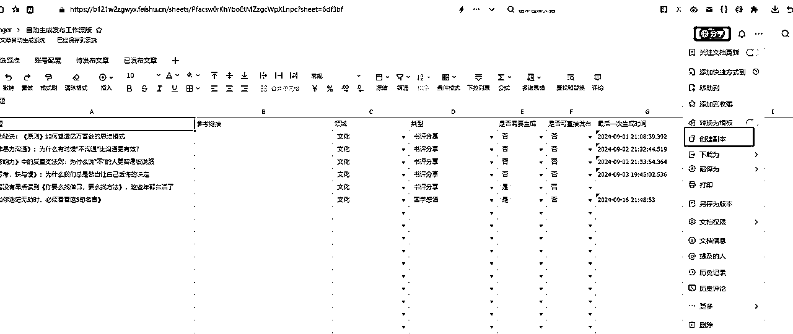
对于不是我社群团队成员的，我会将插件代码附在后面。
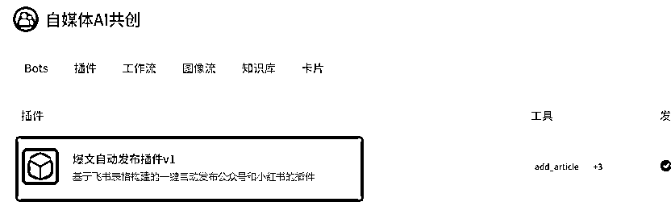
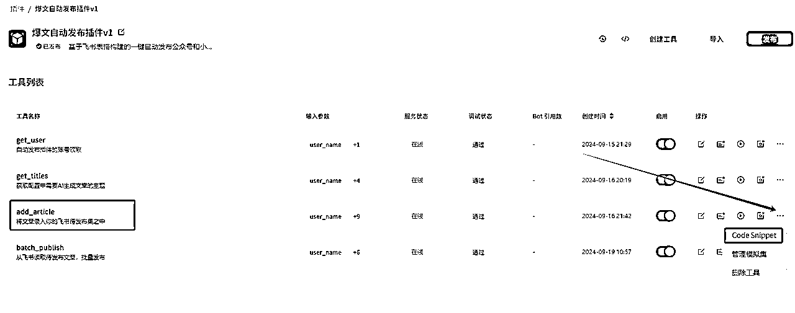
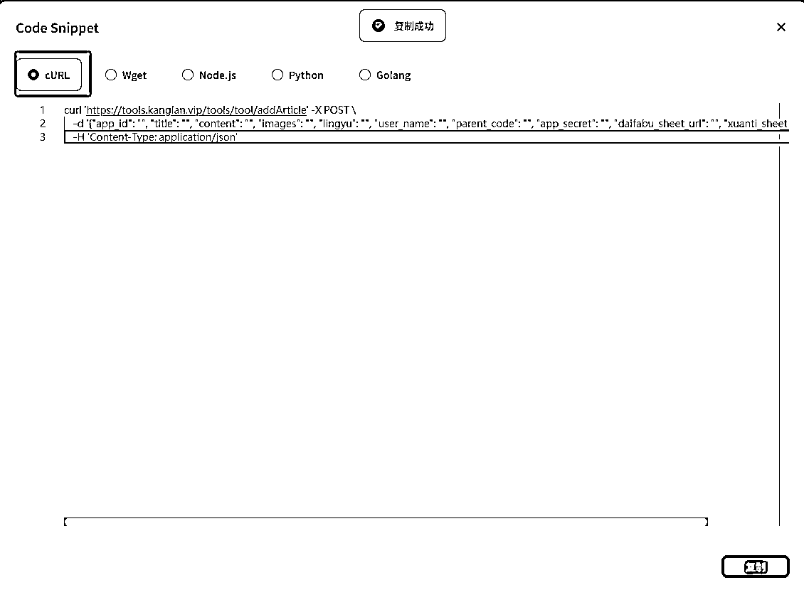
这里说个题外话，为什么不是直接使用这个插件，而是重新导入到自己空间，因为在团队群里面，大家都能看到彼此的工作流，而我们这个工具使用过程中，需要飞书app_id和密钥，还要配置微信的app_id和密钥，这些都是要保密的，不能让别人知道，否则容易被人搞破坏哈
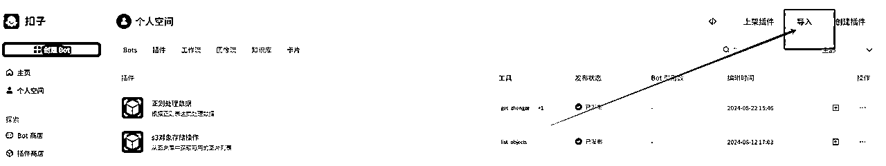
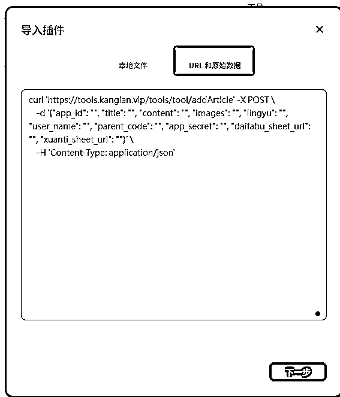
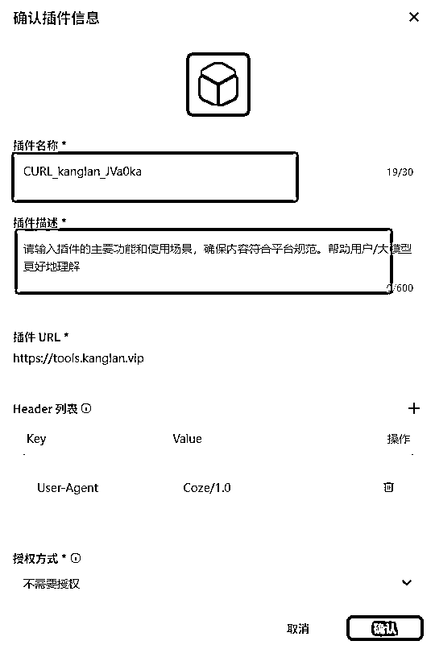
因为不启用，等下无法调试，点完启用，点击工具名称，进入详细的参数修改
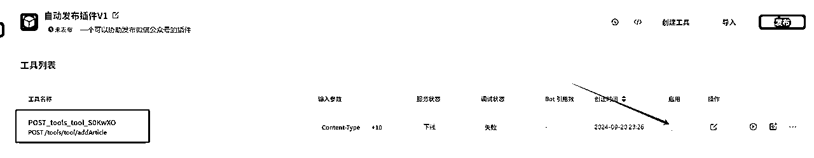
接着点击编辑工具
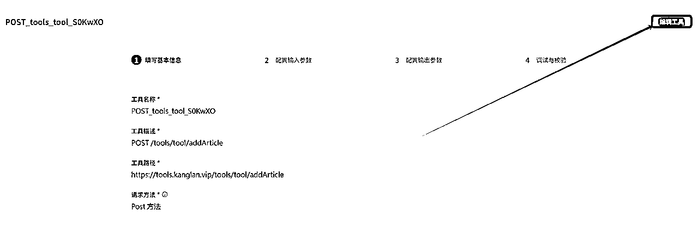
进入插件编辑页面，这里的名称改一下，改成自己习惯的命名，也可以不改。
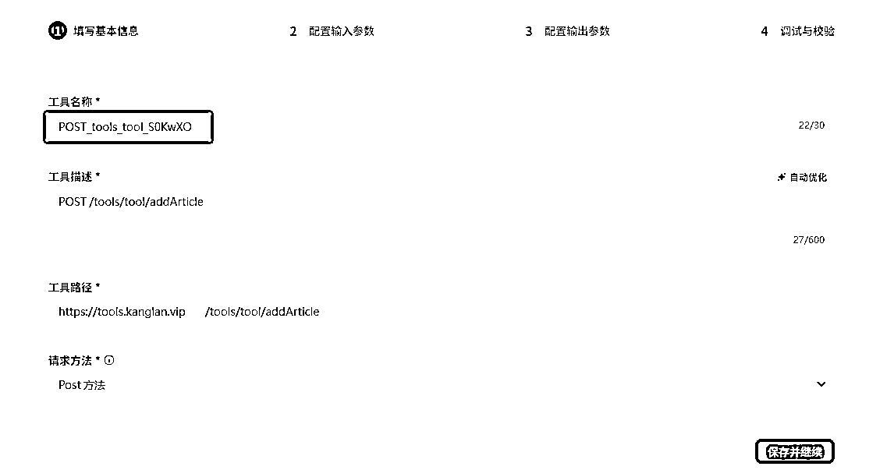
保存并继续，如下图，将我红框内的几个参数，把你的配置信息，如对应的飞书表格链接填入默认值这一栏，然后将可见关闭，这样你这个插件，之后使用，就不用每次都填这些本来就是固定的参数了。
对了，还有最上面有个Content-Type的参数，可以删除的。
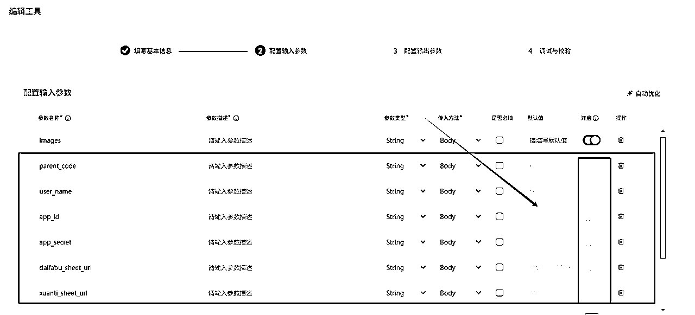
然后，就是参数描述是必填，直接在我的原始的插件那个地方，也就是我共享的那个插件那里复制就行了
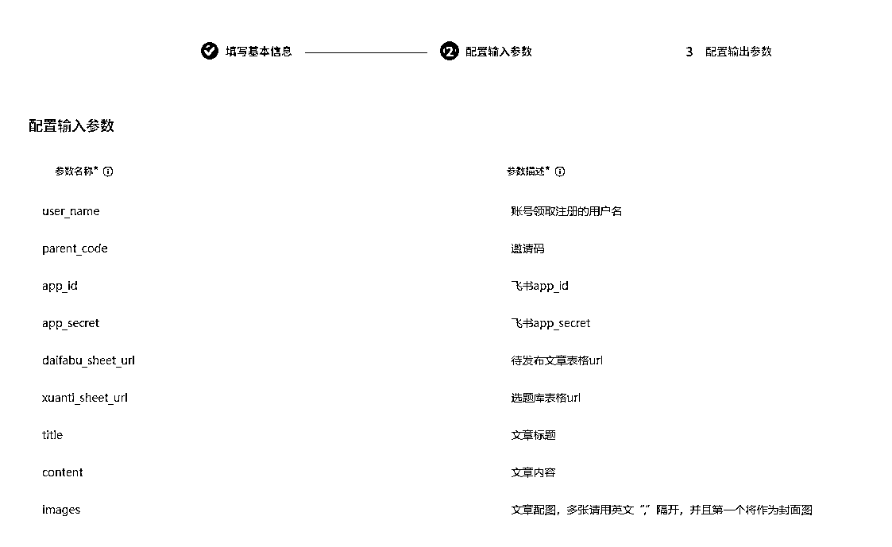
然后是输出参数：
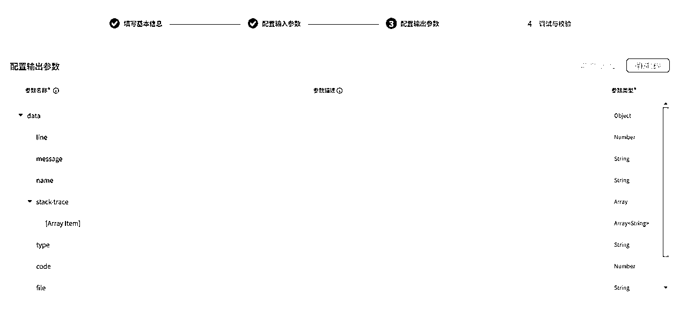
全部默认就行了，直接下一步
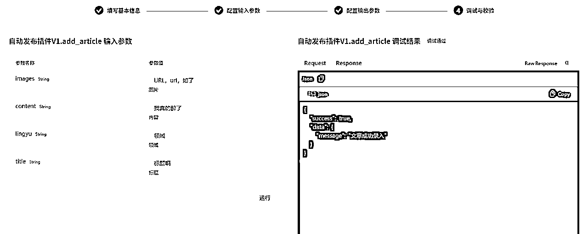
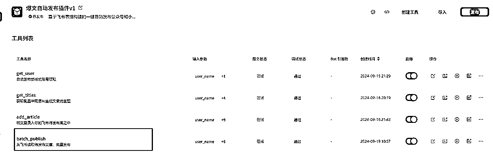
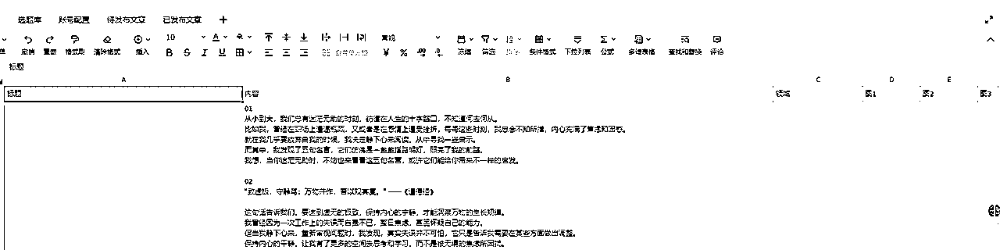
主要包含 标题、内容、跟领域，以及配图。
要注意的是领域，要跟账号配置的领域对应，那么这篇文章才会发送到该账号
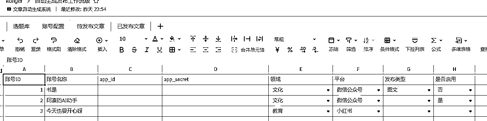
账号ID：用于后面登记已发布文章的，过滤重复发布的情况
这里的app_id,和app_secret填的是微信的开发者配置里面的
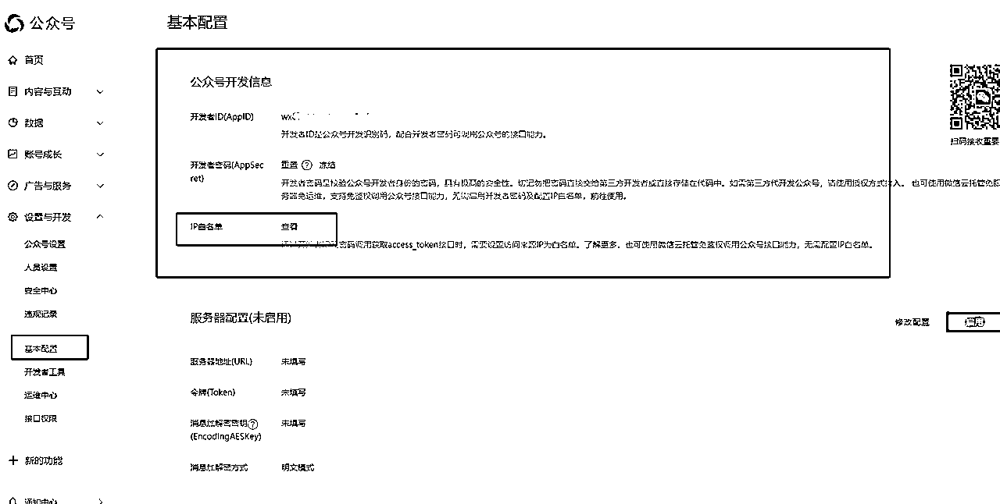
记得白名单要配置一下我的IP 106.55.181.114，不然用不了。
领域：要跟待发布的对应
平台；微信公众号要选上微信公众号，程序会判断。
发布类型，暂时没有用到。
是否启用：启用了才参与发布，不启用就不发布。
以下所有工作流，已经加入社群团队的成员，可以到coze团队下自己搬运。
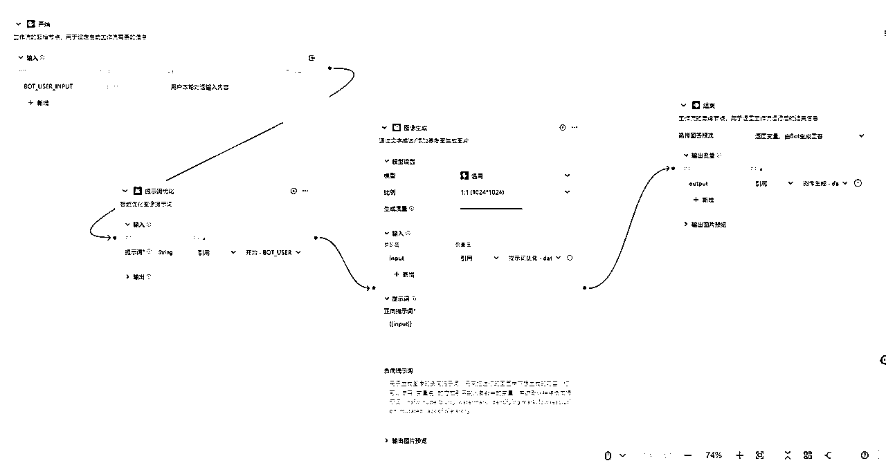
我这边做的国学文，大家可以根据需要，调教成你们的发文类型，保证，输入一个主题，生成一篇文章就行了。
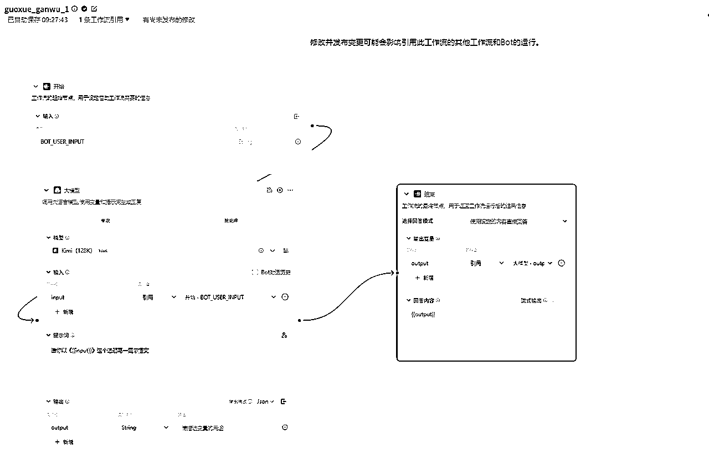
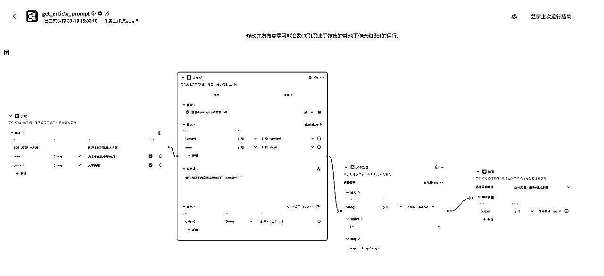
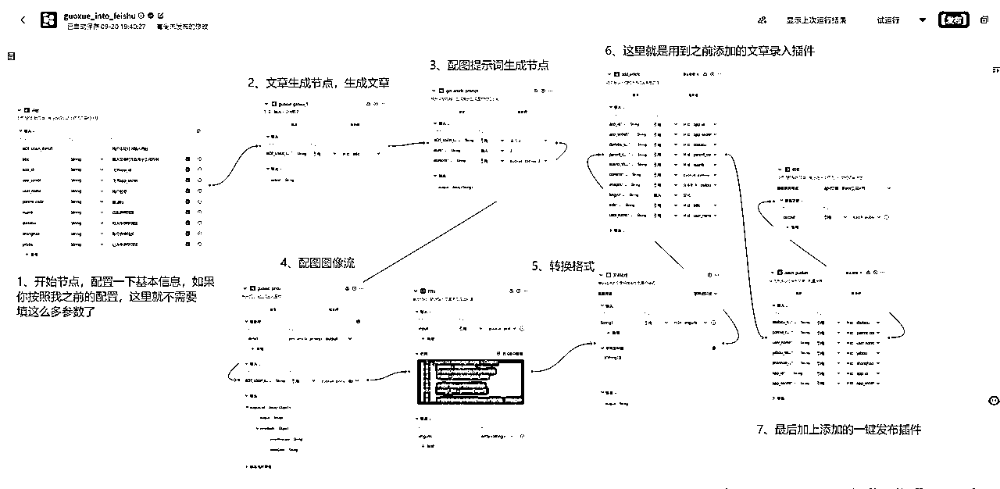
按照要求传输参数即可，这里有涉及用到一个代码块，代码如下，大家记得切换python环境，默认是js的：
async def main(args: Args) -> Output:
params = args.params
# 将JSON字符串转换为Python字典
# data = json.loads(json_data)
# 提取"String1"键对应的列表
string1_list = params['input']
# 提取列表中每个字典的"output"键的值，并构建新的列表
output_list = [item["output"] for item in string1_list]
# 返回转换后的列表
ret: Output = {
"imgurls": output_list
}
return ret
到这里，整个工作流就完成了，调试修改一下就行了
1、目前小红书没有找到api调用方式，后期还是会沿用RPA的方式做一个一键发布的。已经减少了很多RPA操作了。
2、选题库功能未完善，后期会考虑用RPA写一个自动根据热点选题，或者根据关键词自动选题的工作流，以形成从选题到发布的自动化闭环。
3、因为加了很多处理，这一套工作流跑下来，要花一分多时间，如果后期要做批量发布，时间会更长。所以会将一键发布优化成，定时执行。我们只需要选题，和生成文章入库就行了。
4、还有的，就看小伙伴们的使用反馈啦.
录入飞书插件代码：
curl 'https://tools.kanglan.vip/tools/tool/addArticle' -X POST \
-d '{"user_name": "", "parent_code": "", "xuanti_sheet_url": "", "content": "", "images": "", "lingyu": "", "app_id": "", "app_secret": "", "daifabu_sheet_url": "", "title": ""}' \
-H 'Content-Type: application/json'
一键批量发布代码：
curl 'https://tools.kanglan.vip/tools/tool/publish' -X POST \
-d '{"yifabu_sheet_url": "", "app_id": "", "app_secret": "", "user_name": "", "parent_code": "", "daifabu_sheet_url": "", "zhanhao_sheet_url": ""}' \
-H 'Content-Type: application/json'